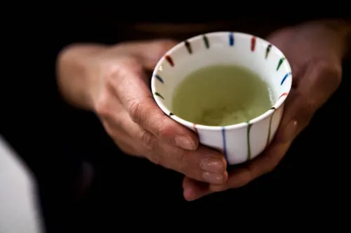

tea, beverage produced by steeping in freshly boiled water the young leaves and leaf buds of the tea plant, Camellia sinensis. Two principal varieties are used, the small-leaved China plant (C. sinensis variety sinensis) and the large-leaved Assam plant (C. sinensis variety assamica). Hybrids of these two varieties are also grown. The leaves may be fermented or left unfermented.